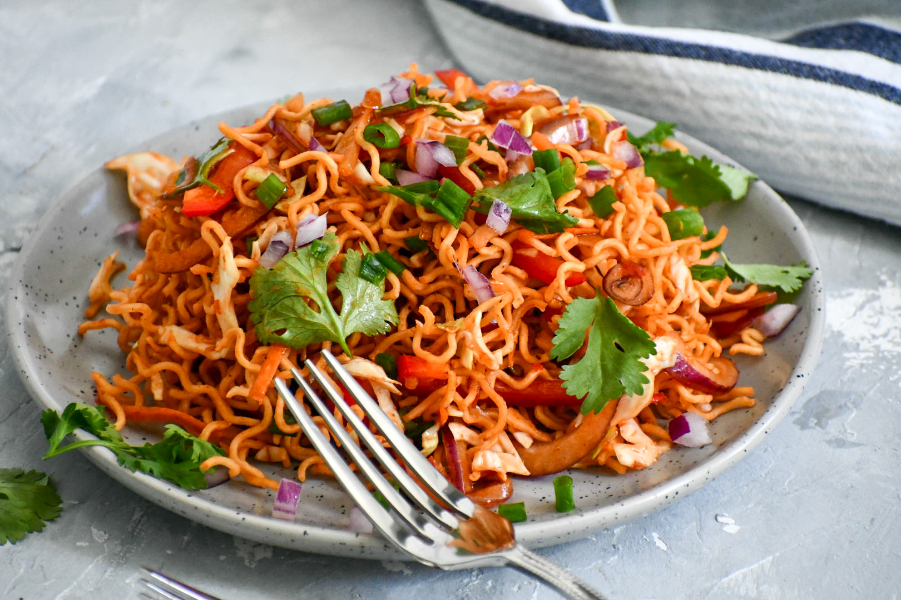

Chinese Bhel
Chinese bhel is an adaptation of American Chopsuey Recipe and also a fusion recipe that is made for Indian tastebuds.
Ingredients
- 3 tsp oil
- 1 clove garlic (finely chopped)
- 1 inch ginger (finely chopped)
- ¼ onion (finely chopped)
- 4 tbsp spring onion (chopped)
- ½ carrot (shredded)
- ½ capsicum (sliced)
- 1 cup cabbage (shredded)
- 2 tbsp schezwan sauce
- 2 tbsp tomato sauce
- 1 tsp soy sauce
- 1 tbsp vinegar
- ½ tsp pepper (crushed)
- ¼ tsp salt
Instruction
- heat 3 tsp oil and saute 1 clove garlic and 1 inch ginger.
- also saute ¼ onion and 2 tbsp spring onion slightly.
- further saute ½ carrot, ½ capsicum and 1 cup cabbage till they are half cooked yet crunchy.
- now add 2 tbsp schezwan sauce, 2 tbsp tomato sauce, 1 tsp soy sauce, 1 tbsp vinegar, ½ tsp pepper and ¼ tsp salt.
- mix well on high flame till the sauce combines well.
- transfer the masala mixture onto fried bhel.
- add 2 tbsp spring onions and mix well.
- finally, serve chinese bhel immediately garnished with more spring onions.